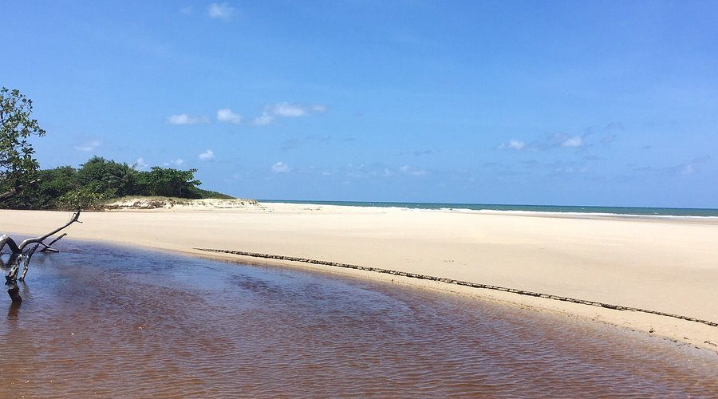
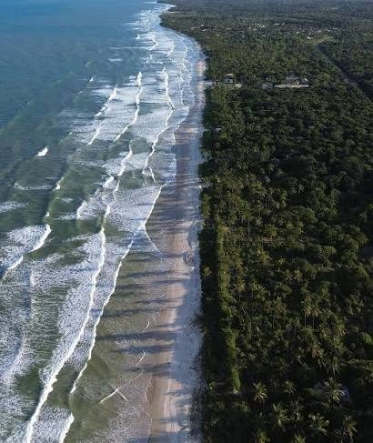
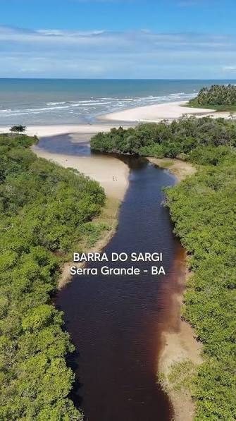

Moradores unidos para representar, organizar e cuidar das nossas comunidades.
Quanto mais moradores participando, mais forte fica a nossa comunidade.
Quero participarNo litoral sul da Bahia, em Serra Grande (distrito de Uruçuca), o Sargi e o Pé de Serra reúnem praias extensas de areia clara, coqueirais e mata atlântica preservada.



Praias longas e abertas, de areia clara e ladeadas por coqueiros e pela mata atlântica, convidam a caminhadas e ao contato com a natureza — um cenário típico do litoral cacaueiro do sul da Bahia.
É onde o Rio Sargi encontra o mar, formando uma barra de águas tranquilas entre a areia e o verde — um dos cartões-postais da região e ponto de encontro de moradores e visitantes.
A Associação de Moradores do Sargi e Pé de Serra reúne moradores e proprietários das comunidades do Sargi e do Pé de Serra, em Serra Grande, distrito de Uruçuca, na Bahia.
É um grupo formado por representantes dos moradores, formalizado juridicamente em cartório, sem fins econômicos e que luta em prol do bem comum. Uma associação pode representar um bairro inteiro, uma parte dele ou até mesmo uma rua. Em geral, seus líderes são eleitos pelos membros da associação e levam as questões mais urgentes do bairro ao conhecimento do setor público.
Busca, perante os órgãos públicos ou na própria comunidade, melhorias para todos os envolvidos no bairro ou na região. Atua na resolução de problemas estruturais do território — como iluminação pública, criação e manutenção de áreas de lazer, coleta de lixo e saneamento básico. Essas soluções são fundamentais para a qualidade de vida de toda a população que vive no entorno, inclusive as crianças.
Além de melhorar a estrutura do bairro, essas ações promovem a socialização entre os moradores, o que contribui para a construção de um sentimento de comunidade entre todos os envolvidos. Uma comunidade forte e unida pode colaborar muito nesse processo.
“É preciso uma aldeia para criar uma criança.”— ditado africano
O espaço onde a comunidade se reúne, decide e se organiza.

É na sede que acontecem as assembleias e reuniões abertas a todos os moradores. Todas as decisões da associação são tomadas em conjunto, de forma transparente e com condições iguais para todos.
Acesso aberto aos documentos da associação e às informações de interesse da comunidade.
Documento que define as regras da associação (Abril/2012).
Baixar PDF ↓Guia da associação para os moradores do Sargi.
Baixar PDF ↓Cuidados e boas práticas de convivência no Sargi (jan/2024).
Baixar PDF ↓Nomes e traçado das ruas do Sargi.
Baixar PDF ↓Resultado da escuta da comunidade sobre as obras no Sargi.
Baixar PDF ↓Registros das reuniões e decisões da associação. (em breve)
Como os recursos da associação são utilizados. (em breve)
A confiança da comunidade se constrói com informação clara e acessível.
A ASMOVISA tem o compromisso de manter a prestação de contas aberta a todos os associados: de onde vêm e para onde vão os recursos da associação, com relatórios simples e comparáveis por período. Os balanços serão publicados aqui e apresentados nas assembleias.
Contribuições, doações e outras entradas da associação. (em breve)
Para onde os recursos são destinados. (em breve)
Balanços e comparativos apresentados nas assembleias. (em breve)
Uma área exclusiva para os moradores e proprietários associados do Sargi e do Pé de Serra.
Comunicados, atas e materiais reservados aos associados.
Emissão de boletos e comprovantes de contribuição.
Canal direto para solicitações, sugestões e reclamações.
Atualize seus dados e mantenha seu contato sempre em dia.
Em breve os proprietários cadastrados terão acesso. Quer ser avisado ou já iniciar seu cadastro?
Solicitar acessoToda decisão é tomada em conjunto. A sua participação faz a diferença.
Qualquer morador ou proprietário do Sargi e do Pé de Serra pode se associar e participar. Quanto mais gente engajada, mais forte fica a associação para representar a comunidade.
As reuniões são abertas e divulgadas com antecedência a todos. É nelas que as prioridades e decisões da comunidade são definidas — a sua voz conta.
Iluminação, coleta de lixo, saneamento, buracos na rua... registre e a associação leva ao poder público.
Registre uma demandaDúvidas comuns sobre a associação e como participar.
Qualquer morador ou proprietário do Sargi e do Pé de Serra pode se associar e participar das assembleias da ASMOVISA.
Participe das assembleias — que são abertas e divulgadas com antecedência a todos — e fale com a associação pelos canais de comunicação. Sua presença e sua voz nas decisões fazem a diferença.
Use o botão “Registre uma demanda”, na seção Participe, que abre um e-mail pronto para a associação. Você também pode falar pelos canais de comunicação. A ASMOVISA leva as questões mais urgentes ao poder público.
Os recursos são usados em benefício da comunidade e prestados de contas a todos os associados. Você pode acompanhar na seção Transparência e nas assembleias.
As formas de contribuição e apoio à associação são definidas em assembleia. Fale com a ASMOVISA pelos canais de comunicação para saber como colaborar.
Sempre em conjunto, nas assembleias, de forma transparente e com condições iguais para todos os associados.
Fale com a ASMOVISA e acompanhe as novidades da associação.
Conheça as pessoas que representam e trabalham pela associação.
Construir um quadro de associados — moradores e proprietários — e desenvolver uma comunicação mais eficiente e colaborativa entre todos.
Levantar e buscar a regularização da situação jurídica da associação, da sede e outras pendências, fortalecendo a ASMOVISA institucional e legalmente.
Construir um canal permanente de diálogo com o poder público, voltado para melhorias efetivas, duradouras e para todos.